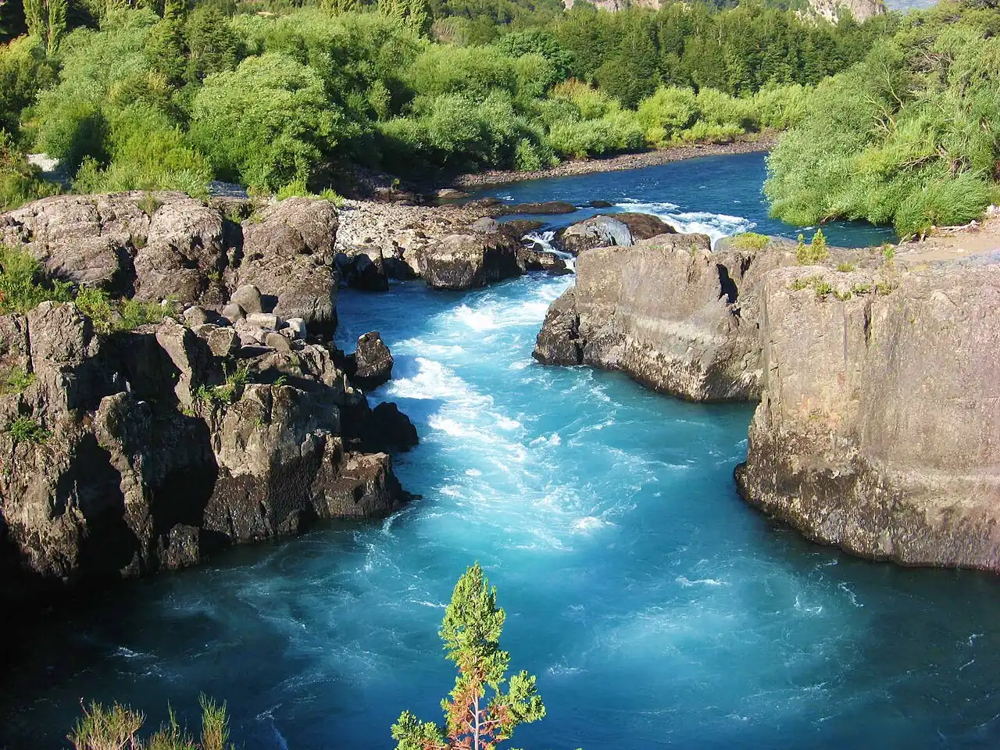

Río Futaleufú
Los Lagos, Chili · kayak

Rivière glaciaire turquoise de la Patagonie chilienne, réputée dans le monde entier pour ses rapides de classe IV à V. Le village de Futaleufú sert de base aux descentes en raft et en kayak.
- Lieu
- Los Lagos, Chili
- Niveau
- Expert
- Activités
- kayak
- Type d'eau
- inland
- Coordonnées
- -43.26, -71.88 (position approximative du secteur)
Dangers à connaître
- Rapides très puissants de classe IV-V : réservé aux kayakistes experts ou aux sorties guidées.
- Eau glaciaire : risque d’hypothermie en cas de dessalage.
Le conseil d'Ocean Buddy
Même en raft, passe par un opérateur certifié avec kayaks de sécurité, et choisis un tronçon adapté à ton niveau.
Ouvrir dans Ocean Buddy Télécharger sur l'App Store
Source : Fiche Ocean Buddy · septembre 2026 · à vérifier localement.